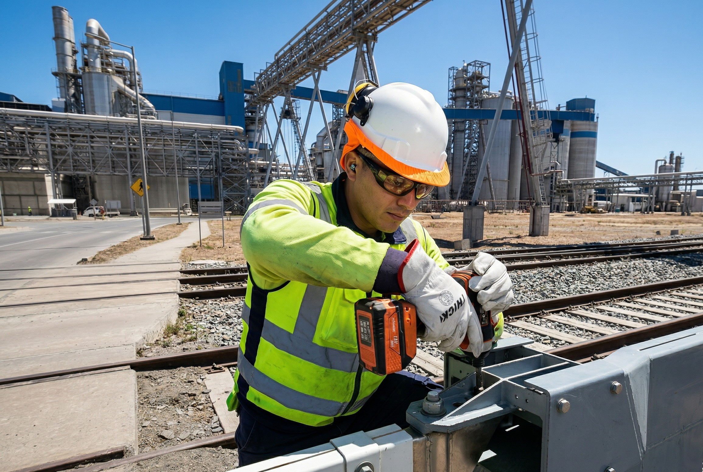

Nuestra Historia
Sánchez e Hijos SpA nace del compromiso con la infraestructura ferroviaria chilena. Desde nuestros inicios, nos hemos especializado en el mantenimiento integral de sistemas críticos que garantizan la seguridad y continuidad operativa del transporte ferroviario. Con años de experiencia en terreno, hemos consolidado un equipo técnico capaz de responder a los desafíos más exigentes del sector.
Hitos
- Fundación de la empresa y primeros trabajos en obras civiles menores para infraestructura ferroviaria.
- Incorporación de servicios de reparación de sistemas de control automático de tráfico ferroviario.
- Expansión a mantenimiento de máquinas de cambio y sistemas de protección con barreras automáticas.
- Desarrollo de capacidades en telemetría aplicada al monitoreo remoto de sistemas ferroviarios.
- Consolidación como proveedor integral de mantenimiento de sistemas ferroviarios.
Áreas de Expertise
- Obras civiles menores: Reparación y mantenimiento de infraestructura física en entornos ferroviarios — canaletas, bases, cámaras y ductos.
- Sistemas de control automático: Diagnóstico, reparación y puesta en marcha de sistemas de señalización y control de tráfico ferroviario.
- Máquinas de cambio: Mantenimiento preventivo y correctivo de mecanismos de cambio de vías, asegurando operación confiable.
- Barreras automáticas: Servicio integral a sistemas de protección en pasos a nivel — sensores, mecanismos y señalización.
- Telemetría ferroviaria: Instalación y mantenimiento de sistemas de monitoreo remoto para supervisión en tiempo real de equipos e infraestructura.
Nuestro Equipo y Valores

Nuestro equipo está formado por técnicos e ingenieros con experiencia directa en terreno. Trabajamos bajo valores que reflejan la naturaleza crítica de nuestra industria:
- Seguridad: Prioridad absoluta en cada intervención.
- Confiabilidad: Cumplimos plazos y estándares sin excepción.
- Experiencia técnica: Conocimiento especializado respaldado por años de trabajo en terreno.
- Compromiso: Con la continuidad operativa de la infraestructura ferroviaria del país.
Asociaciones y Referencias
Trabajamos en estrecha colaboración con los principales actores del sector ferroviario chileno. Nuestros servicios están alineados con los estándares y requerimientos de la industria nacional.
Para conocer más sobre el sistema ferroviario chileno, visita el sitio oficial de la Empresa de los Ferrocarriles del Estado (EFE) .